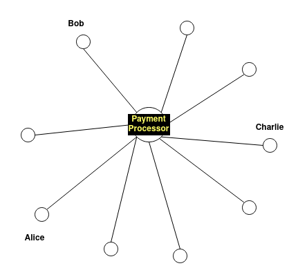
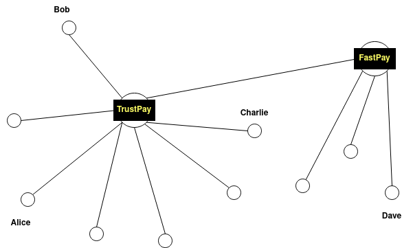
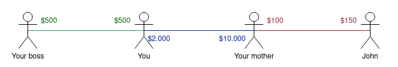
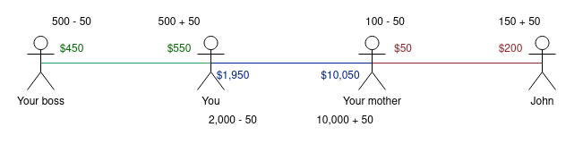
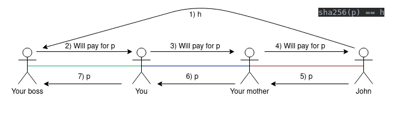

History of Atomic Routing
Non-chronological order
Ordered by topics rather than time
Inflexible channel ownership
- To this day, payment channels are built between 2 parties
- Transactions are possible between Alice and Bob, Charlie is left out
- This cannot be changed, or it requires on-chain action
Channel overdose
Do we need to open a payment channel with everyone we want to transact with?
That's very inefficient!
Centralized hubs
- Meni Rosenfeld: Centralized hubs that forward payments
- Posted in Bitcointalk forum, July 2012
- Centralized payment processors forward payments
- Centralized solutions are always easier to build!
"Hub and Spoke" network model

Visualization
Multi-Hub
Security model
The payment processors are businesses and have incentives to behave ethically
Drawbacks
- Insecure (based on trust)
- Payment processor can invade privacy and censor payments
- Potentially unreliable (payment processor is down)
Ryan Fugger: Ripple
- Paper released in 2004 (more papers)
- Not the cryptocurrency
- System based on debt (and trust)
Ripple idea
- Use already existing trust-relationships to transfer debt
- You would lend your mother up to $2.000 and trust she could pay it back some day
- She would lend you up to $10.000 and trust you could pay it back
- You'd lend your boss $500
- ...
Ripple idea
This results in a network of trust relations
Scenario
Your boss wants to buy something from John for $50 (on credit)
- He owes you $50
- You owe your mother $50
- Your mother owes $50 to John
Trust situation after 'payment'
New situation
John could now send $200 into the opposite direction
- He trusts your mother a debt of $150
- Plus he owes her $50
System was used ...
... on a centralized platform. (Ripplepay website)
- Platform could become malicious
- The whole point was to not have to trust unknown entities
Building it in a decentralized way ...
- Routing turns out to be a major problem
- No known solution to make transaction atomic
- How do you even know whether a payment went through?
Someone does not pay

- Someone does not pay willingly
- Someone is just offline or has technical problems ...
Someone does not pay
- Is the payment just stuck or will it not go through?
- Where exactly is the routing failing?
- Sender says he paid, receiver says he didn't receive. Who is lying?
Proof that payment went through
Return a secret when payment arrived;
I will pay you as long as you know p such that sha256(p) == h
Payment proof
- Atomicity is still a problem
- How can disputes be resolved?
Conclusion
- Concept of routing through the network looks promising
- But the Bitcoin way please
- Not based on credit but fully backed
- Trustless
Project Ripple
Lessons learned
- We need some form of a court to resolve disputes
- It needs to define:
- Time frame available for forwarding
- Was payment forwarded or not
- How to resolve disputes?
Spoiler Alert!
- The Bitcoin consensus itself could be that court!
- It defines time through its block time
- We can use scripts to ensure a transaction is routed through atomically
HTLC
- Hashed TimeLock Contract
- Proposed by Poon and Dryja in the Lightning Network paper
- Uses time locks
- Uses hash locks
Time lock
Funds can only be spent after a given time or block number
Hash lock
Funds can only be spent if you know the secret s, such that:
hash(s) == x
x is written to the unlocking script, s needs to be provided by the spender such that x can be reproduced
Combine restrictions
signature+ hash lock + time lock
Funds can be spent by you, at block 800,000 (or later), if you know a secret
Scenario

Alice wants to pay Eric